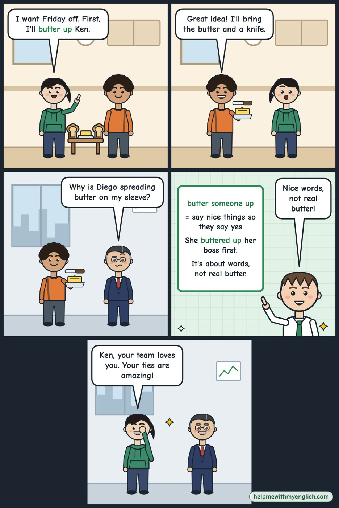

butter someone up
To say nice things to someone so they will do what you want.
She buttered up her boss with compliments before asking for a day off.
Tip: Say 'butter someone up' (or 'butter up someone') and add 'before asking' or 'to get' something; it often sounds a little insincere, so use it about others more than yourself.
Hear it in conversation
Workbook
1. What does it mean?
In this conversation, what does 'butter her up' mean?
2. Fill the gap
My brother always our mum with compliments before he asks to borrow her car.
3. Choose the best reply
Mei: Why is Diego being so nice to the landlord today?
4. Your turn: speak
Have you ever tried to persuade someone by being extra nice to them first? What happened?
Show an example answer
Yes, once I wanted to leave work early for a family event, so I buttered up my manager by praising the team report she had written. She probably knew what I was doing, but she laughed and let me go anyway.
Answer key: butter someone up
- 1. D. Be extra kind and flattering so she will agree to a request
- 2. butters up
- 3. C. He's buttering him up because he wants a lower rent next year.
- 4. Example: Yes, once I wanted to leave work early for a family event, so I buttered up my manager by praising the team report she had written. She probably knew what I was doing, but she laughed and let me go anyway.
See it in a comic
